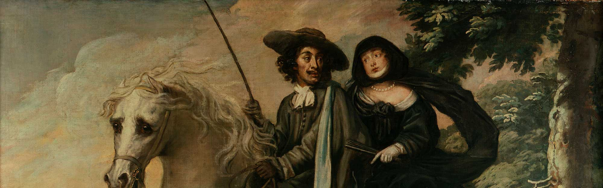

Charles II and the Oak Tree
Charles II and the Oak Tree
After his defeat by the Parliamentarian forces at the Battle of Worcester in 1651 Charles's life was in terrible danger. Descriptions of him were circulated; he was very tall and dark which made him very conspicuous. Soldiers were ordered to hunt for him; there was a reward of £1000 for his capture. Charles survived through the bravery of a small number of his loyal subjects who risked their own lives to help him.
Immediately after the battle the five Penderell brothers assisted him. They disguised him as a woodcutter, dressing him in old clothes. During the day he hid in an oak tree, accompanied by Major Carless. There Charles, exhausted, fell asleep while Major Carless held him, terrified that the soldiers below searching the woods would look up and see them. Slowly, by night, they moved Charles from one safe house to another. He accompanied a brave young woman, Jane Lane, to the coast as her servant, calling himself 'Will Jackson'. There he eventually found a boat to take him to safety in France. It was nearly ten years before he was able to come back and reclaim his rightful throne.
Background to the paintings
King Charles II loved to tell the story of his escape. He therefore commissioned a set of paintings to show the key moments in his adventure. Oddly, in these paintings, Charles is shown not at the age that he was when the events took place but as he looked when the pictures were painted.
Note for teachers, parents and carers
Find the object or person mentioned in the red text, and then click on the red outline in the picture to continue story.
Get Creative
Enter our Jubilee family competition
Submit your family’s recreation of a Royal portrait to win some Jubilee goodies
Enter nowDevelop your art skills
Discover our BP Next Generation short films made by artists. Follow step by step guides in drawing and painting techniques.
Hold Still photography workshop
Reflect on your own experiences of lockdown through this easy-to-do from home, photographic exercise.
 by John Keane © National Portrait Gallery, London")
Draw Like a Renaissance Master
Revisit The Encounter exhibition and learn about Renaissance and Baroque drawing methods and materials.
Related portraits
- King Charles II (NPG 1499)
- King Charles II at Whiteladies (King Charles II; Richard Penderel) (NPG 5247)
- King Charles II and Colonel William Carlos (Careless) in the Royal Oak (NPG 5249)
- King Charles II on Humphrey Penderel's Mill Horse (NPG 5250)
- King Charles II in Boscobel Wood (NPG 5248)
- King Charles II and Jane Lane riding to Bristol (NPG 5251)
Related sitters
Related artists
Join & Support